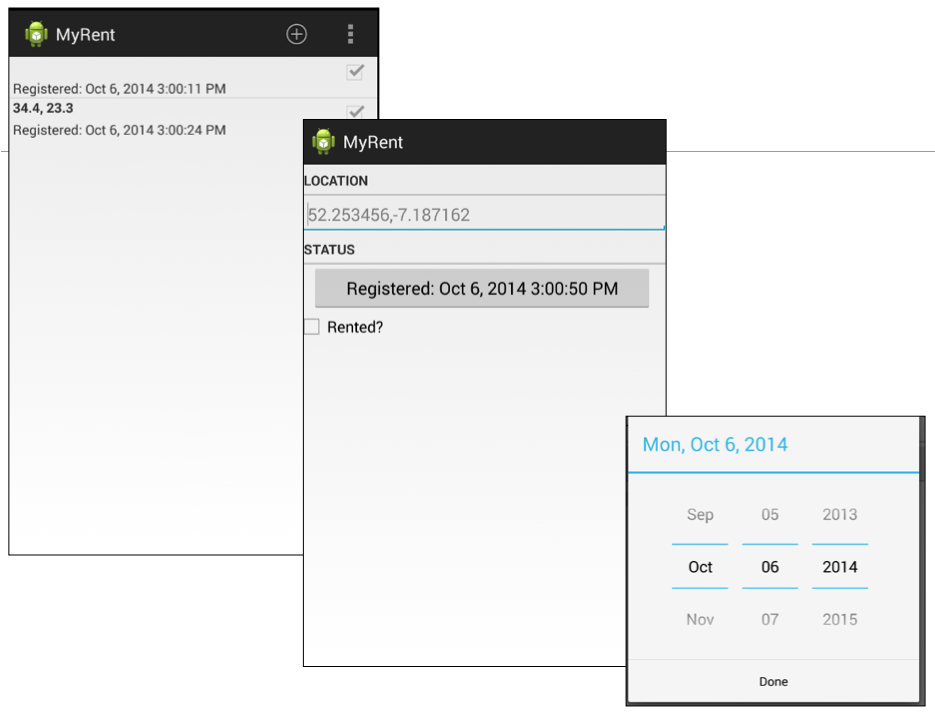
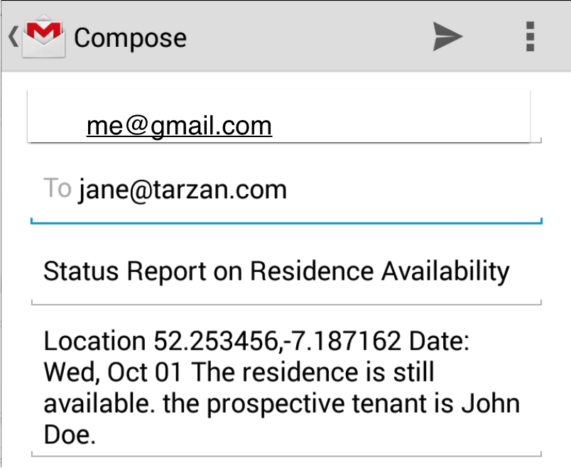

Navigation into Apps
5: Navigation & Intents


Last time we explored briefly navigation within an app. In this session we continue this discussion, with a focus on navigation from the users perspective, looking at how a user can arrive into an app, and also how they may move between apps.
MyRent01-02

We review the structure, model and code in the MyRent 01 and 02 applications. The application at this stage has 2 views - sometimes called a 'Master-Detail' pattern. The Master presents a list of items which, if selected, will launch a detail view presenting the individual items. The List if items is randomly generated at application startup, and cannot be extended.
MyRent03

In this version we introduced an action bar, containing an option to enable a new Residence Item to be added. This residence is created in the ResidenceActivity, and will be added to the list. Additionally, the ResidenceActivity now supports a simple dialog to allow the user to select a date.
MyRent-04

Introduce into MyRent a serialization mechanism to save/restore the residence list to a file. The app will load the contents of this file on launch, and update the file if residence data is updates. In addition, continue to evolve the navigation support in the app, enabling a 'up' navigation in the action bar from the ResidenceActivity to the ResidenceListActivity.
MyRent-05

Activities within an application can reach out to activities in other applications to perform specific tasks. In this lab we introduce two new features - selecting a contact from the phone's contact lists, and sending an email to the selected user. Both of these features require the usage of 'implicit' intents.